以区域注意力（Area Attention）降低注意力的空间复杂度，以 R-ELAN 稳定大模型训练，再用一套面向 YOLO 的结构精简，把“注意力很慢”这件事拆开重解。
YOLO 框架长期依赖 CNN 结构，尽管注意力在建模能力上已被证明更强——根本原因是注意力模型的速度跟不上。本文提出 YOLOv12：以区域注意力（Area Attention）降低计算复杂度，以残差高效层聚合网络（R-ELAN）改善特征聚合，并保留简洁的层级设计。
— 原文 Abstract（意译）RT-DETR 使用的 ResNet-50 仅约 15 FPS，而 YOLOv6-3.0-C 可达 30+ FPS；YOLOv7 在精度更高的同时比 R50 快 2 倍以上。
论文引用现有结论：在相近计算预算下，CNN 架构比注意力架构快约 3 倍，这直接限制了注意力在 YOLO 中的落地。
RT-DETR 通过高效编码器与查询选择进入实时区间，但精度与时延的权衡仍不及同量级 YOLO。
于是问题变成：能否在 YOLO 的实时约束下，真正把注意力用起来？论文的答案不是换回 CNN，而是先把注意力的效率问题拆开。
自注意力需要每个 token 与全部 token 交互，计算量为 O(L2d)；卷积则为 O(kLd)，k 远小于 L。高分辨率输入下差距被迅速放大。
注意力图 QKT 与 softmax 图（L×L）需要在 SRAM 与 HBM 之间反复搬运，而 SRAM 读写速度是 HBM 的 10 倍以上。
卷积依赖固定感受野与滑窗，访存规则、易缓存；注意力的稀疏与不规则访问进一步拉高延迟。
把特征图按行或列等分为 l 段（默认 4），每段做 2D 注意力；只需 reshape，避免显式划窗。计算量从 2n2hd 降到 ½n2hd，感受野缩为 1/4 但仍足够大。
在 ELAN 上增加 block 级残差捷径（带缩放因子）与新的聚合瓶颈，解决梯度阻断与大模型不收敛，同时降低隐藏维扩张和冗余计算。
引入 FlashAttention，移除位置编码，MLP ratio 从 4 调到 1.2，尽量用卷积算子，并减少末段堆叠深度。
整体仍沿用 YOLO 的层级结构：stage 1–2 直接复用 YOLOv11，backbone 末段只保留 1 个 R-ELAN，而不是继续堆 3 个 block。
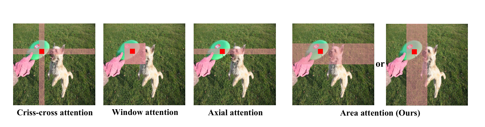
Figure 2. 代表性局部注意力与区域注意力对比：按行/列等分 l 段（默认 4），避免显式划窗，同时保留较大感受野。
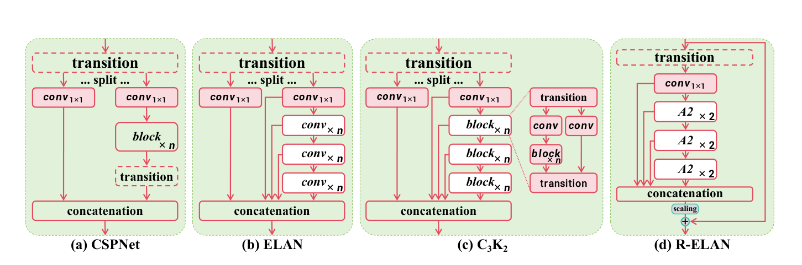
Figure 3. (a) CSPNet、(b) ELAN、(c) C3K2 与 (d) 本文 R-ELAN 的结构对比。
维持多尺度结构；stage 1–2 沿用 YOLOv11，不套用 R-ELAN。
backbone 末段不再堆 3 个 block，只保留 1 个 R-ELAN。
MLP ratio 从 4 降到 1.2；N/S/M 尺度取 2。
Conv2d + BN 取代 Linear + LN；移除位置编码。
7×7 深度可分离卷积作用于 v，输出再加回 v@attn。
配合 FlashAttention 解决访存问题。论文同时说明：这些改动多数并非首次提出，价值在于把它们组合成适配 YOLO 的完整方案。
训练配方对五个尺度共用，只有 Mixup 与 Copy-paste 的强度随尺度递增。
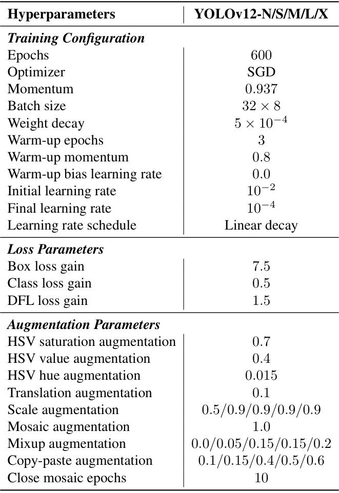
Table 7. YOLOv12-N/S/M/L/X 在 COCO 上微调的超参数。
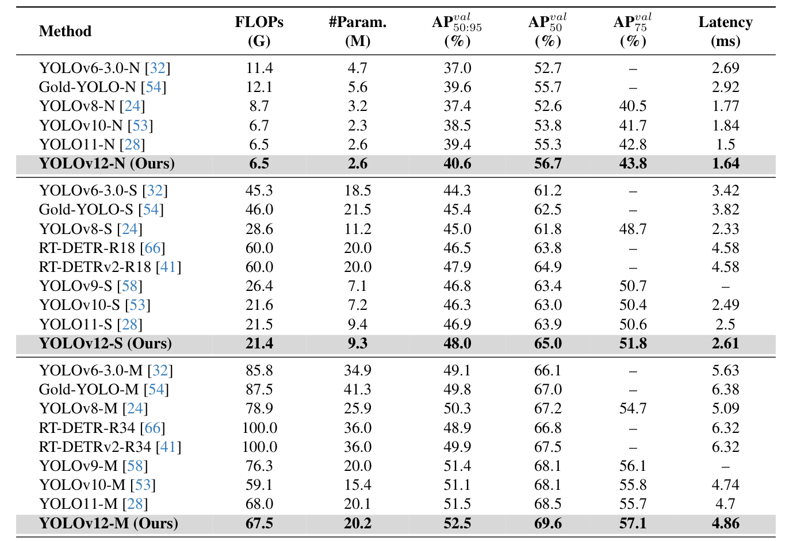
Table 1（上）. N/S/M 尺度对比（COCO val，640×640，时延为 T4 + TensorRT FP16）。N/S/M 的 AP 分别为 40.6 / 48.0 / 52.5，均为同量级最高。
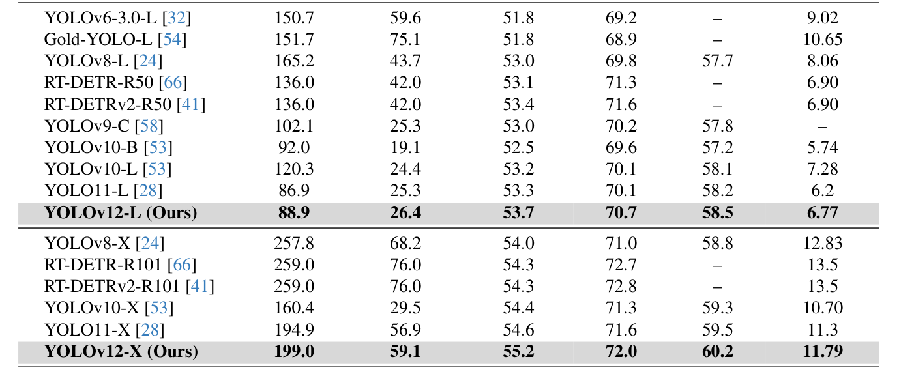
Table 1（下）. L/X 尺度对比；列依次为 FLOPs (G)、#Param. (M)、AP50:95、AP50、AP75、Latency (ms)。
L 以 88.9 GFLOPs 达到 53.7 AP，比 YOLOv10-L 少 31.4 GFLOPs、AP 高 0.5；X 为 199.0 GFLOPs / 55.2 AP。
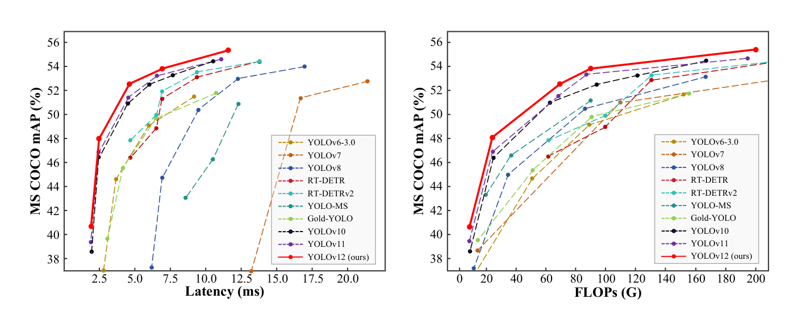
Figure 1. 与主流方法的精度-时延（左）和精度-FLOPs（右）权衡；红色曲线为 YOLOv12。
N：1.64 ms / 40.6 AP
S：2.61 ms / 48.0 AP
X：11.79 ms / 55.2 AP
对 RT-DETR-R18，时延 2.61 vs 4.58 ms，快 42%；计算量少 36%，参数少 45%。
对 RT-DETR-R50，参数少 37.1%，且推理更快。
对 RT-DETR-R101，参数少 22.2%，速度同样更快。
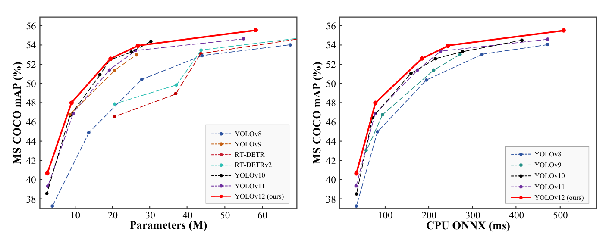
Figure 4. 精度-参数量（左）与 CPU 精度-时延（右）对比，CPU 为 Intel Core i7-10700K @ 3.80GHz。
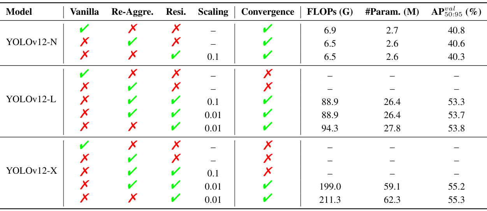
Table 2. R-ELAN 消融：Vanilla 为原始 ELAN，Re-Aggre. 为新聚合方式，Resi. 为残差，Scaling 为缩放因子。
N：40.8（6.9 G / 2.7 M）→ 40.6（6.5 G / 2.6 M），AP 微降但更轻。
L：无残差不收敛；缩放 0.01 时达 53.7 AP。
X：0.01 下 199.0 G / 59.1 M / 55.2；原始聚合为 211.3 G / 62.3 M / 55.3。
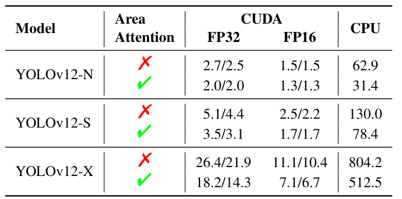
Table 3. 区域注意力速度消融；CUDA 在 RTX 3080/A5000，CPU 在 i7-10700K，均未启用 FlashAttention。
N：CUDA FP32 2.7 → 2.0 ms；CPU 62.9 → 31.4 ms。
S / X：CPU 130.0 → 78.4 ms；804.2 → 512.5 ms。
口径：刻意关闭 FlashAttention，以放大区域注意力本身的速度差异。
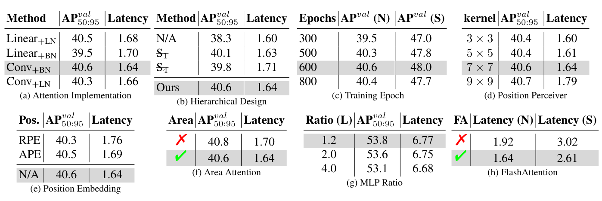
Table 5. 诊断实验 (a)–(h)；除特别说明外均为 YOLOv12-N、600 epochs 从头训练。
实现：Conv+BN 最优（40.6 AP / 1.64 ms）；Linear+LN 为 40.5 / 1.68 ms。
结构：plain ViT 仅 38.3 AP；600 epochs 最佳，800 epochs 反降至 40.4。
细节：7×7 卷积核平衡速度与精度；无位置编码最好；MLP 1.2 让 L 达 53.8。
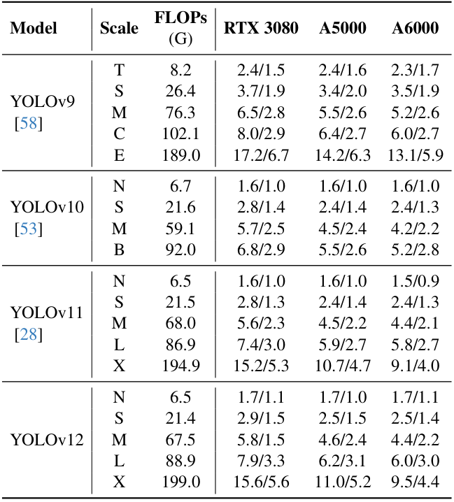
Table 4. 三种 GPU、FP32 / FP16 精度下的推理速度对比（ms）。
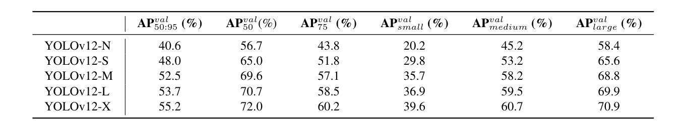
Table 6. YOLOv12 在 COCO 上的详细性能（AP50:95、AP50、AP75 与 small/medium/large）。
X 尺度：55.2 AP、72.0 AP50、60.2 AP75。
分尺度：小 / 中 / 大目标 AP 为 39.6 / 60.7 / 70.9。
趋势：N → X 的小目标 AP 从 20.2 提升到 39.6。
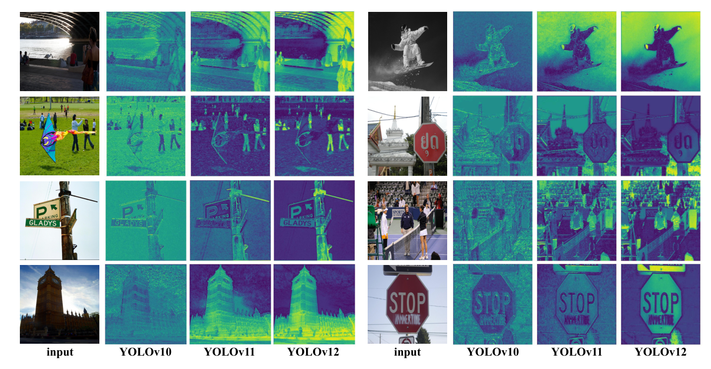
Figure 5. YOLOv10、YOLOv11 与 YOLOv12 热力图对比；均取 X 尺度模型的 backbone 第三阶段特征。
论文认为，区域注意力的感受野大于卷积网络，更擅长捕捉整体上下文，因此前景激活更精确。
区域注意力降低复杂度，R-ELAN 稳定训练，结构精简补齐实时性；三者组合后，YOLOv12 在 COCO 上取得领先的时延-精度权衡。
论文明确指出：YOLOv12 依赖 FlashAttention，仅支持 Turing、Ampere、Ada Lovelace、Hopper 等 NVIDIA GPU。
论文的实测与支持列表均限定在 NVIDIA GPU，未给出移动端或非 NVIDIA 硬件的结果；Table 3 与 Figure 4 的 CPU 数据来自 i7-10700K。
不是把 CNN 换成注意力，而是先把注意力的代价降下来——这是 YOLOv12 最值得带走的一条工程经验。
YOLOv12: Attention-Centric Real-Time Object Detectors
arXiv:2502.12524v1 · 18 Feb 2025 · Technical Report
文中图表均取自原论文，未做重绘；数据与结论以原文为准。